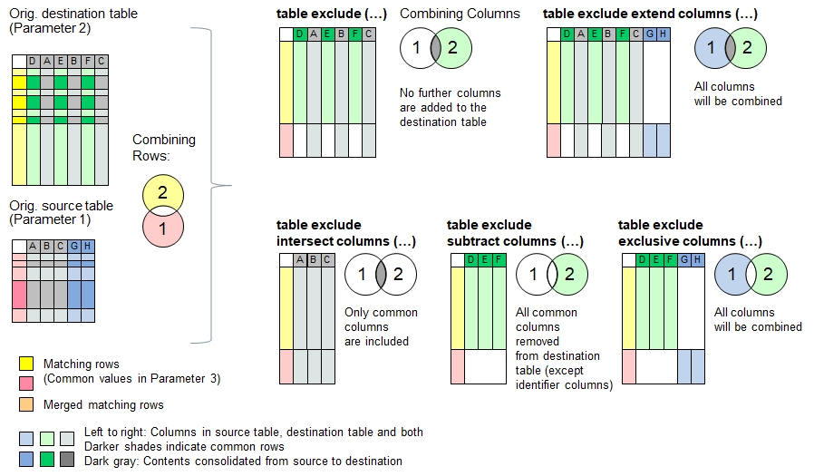

Function Names
table exclude, table exclude extend columns, table exclude exclude columns, table exclude columns, table exclude exclusive columnsDescription
In the destination table, the functions described here will remove all rows which share the same contents in the identifier columns and include the rows from the
source table whic do also not share the same identifier columns. Briefly said, the principle of exclusive or or disjoint union is applied on the rows.
If if no identifier columns have been specified, then all rows are considered unique and will be integrated into the target table.
The principle of data consolidation does not apply for these functions and this explains the that tehse functions take max. 3 parameters,
excluding the remaining parameters otherwise needed for data consolidation.
In case the two tables contain multiple equal values in the identifier columns (for example if only the first name has been referred), then every affecting row in the
source table will be consolidated in one row in the destination table and then checked off as 'done'. If another row in the source table has the same value, then
the next match further below in the destination table will be seeked. If the source table contains more repeated contents in the identifier column than in the
destination table, then the remaining rows will be added to the end of the destination table.
The following functions use different approaches to combine the data columns:
| table exclude | No further columns are added to the destination table |
| table exclude extend columns | Columns in the source table but not found in the destinationtable will be added to the target table (union set) |
| table exclude intersect columns | Removes columns from the destination table if they do not exist in the source table (intersection) |
| table exclude subtract columns | removes columns from destination table if they are found in the source table, but keeps the identifier columns. |
| table exclude exclusive columns | Removes columns found in both source and destination table, but keeps the identifier columns (exclusive OR). |

Note: If the destination table does not yet exist, or if the table is entirely empty (i.e. no header inside), then the data in the source table will be copied into the destination table.
Typical applications:
- Eliminating commonalities
Call as: procedure or function
Restrictions
Indirect parameter passing is disabled
Parameter count
2-3 (Note: Max 3 parameters for this function family, not 6).
See table merge() for parameter and return value description
Program Examples with 'table exclude ...'
Merging tables into one without identifier columns specified
echo("Loading farms in Hillboro and Hillville");
table load( hb, "Examples/Table Merge Examples Hillboro.csv");
table load( hv, "Examples/Table Merge Examples Hillville.csv");
echo("Farms in Hillboro:");
table list( hb );
echo("Farms in Hillville:");
table list( hv );
count[] = table exclude( hv, hb );
echo("Hilltown is a merger of Hillboro and Hillville (", count[], " rows consolidated):");
table list( hb );Output: Table will be empty because no identifier column is specified, so every column is unique
Loading farms in Hillboro and Hillville
Farms in Hillboro:
0 : Organic | Place | Farmer | Wheat | Oat | Sheeps | Cows | Acres | Speciality
1 : No | Hillboro | F. Fuller | 3 | | | | 4 | Hogs
2 : Yes | Hillboro | R. Rudy | 19 | | 20 | 24 | 21 | Restaurant
3 : | Hillboro | D. Daniels | 2 | | | | 3 |
4 : No | Hillboro | M. Miller | 2 | 1 | | | 5 |
5 : Yes | Hillboro | K. Klein | 10 | 10 | 40 | 30 | 28 | Vegetables
6 : | Hillboro | P. Pomme | | | 50 | 40 | 21 | Apples
Farms in Hillville:
0 : Place | Farmer | Acres | Wheat | Barley | Corn | Cows | Organic | Speciality
1 : Hillville | M. Miller | 20 | 4 | | 5 | 30 | | Hops
2 : Hillville | F. Fuller | 18 | 5 | 9 | | 22 | Yes | Pigs
3 : Hillville | B. Beaver | 23 | 1 | 4 | 3 | | Yes | Sugar Pea
4 : Hillville | J. Jill | 14 | 8 | 1 | 3 | 10 | |
5 : Hillville | D. Daniels | 21 | | 18 | | 0 | | Lodging
Hilltown is a merger of Hillboro and Hillville (0 rows consolidated):
0 : Organic | Place | Farmer | Wheat | Oat | Sheeps | Cows | Acres | Speciality
1 : No | Hillboro | F. Fuller | 3 | | | | 4 | Hogs
2 : Yes | Hillboro | R. Rudy | 19 | | 20 | 24 | 21 | Restaurant
3 : | Hillboro | D. Daniels | 2 | | | | 3 |
4 : No | Hillboro | M. Miller | 2 | 1 | | | 5 |
5 : Yes | Hillboro | K. Klein | 10 | 10 | 40 | 30 | 28 | Vegetables
6 : | Hillboro | P. Pomme | | | 50 | 40 | 21 | Apples
7 : | Hillville | M. Miller | 4 | | | 30 | 20 | Hops
8 : Yes | Hillville | F. Fuller | 5 | | | 22 | 18 | Pigs
9 : Yes | Hillville | B. Beaver | 1 | | | | 23 | Sugar Pea
10 : | Hillville | J. Jill | 8 | | | 10 | 14 |
11 : | Hillville | D. Daniels | | | | 0 | 21 | Lodging
Declare 'Farmer' as unique identifier
table load( hb, "Examples/Table Merge Examples Hillboro.csv");
table load( hv, "Examples/Table Merge Examples Hillville.csv");
count[] = table exclude( hv, hb, Farmer );
echo("Hilltown is a merger of Hillboro and Hillville (", count[], " rows consolidated):");
table list( hb );Output: 3 farmers with land in both towns have been consolidated.
Hilltown is a merger of Hillboro and Hillville (3 rows consolidated):
0 : Organic | Place | Farmer | Wheat | Oat | Sheeps | Cows | Acres | Speciality
1 : Yes | Hillboro | R. Rudy | 19 | | 20 | 24 | 21 | Restaurant
2 : Yes | Hillboro | K. Klein | 10 | 10 | 40 | 30 | 28 | Vegetables
3 : | Hillboro | P. Pomme | | | 50 | 40 | 21 | Apples
4 : Yes | Hillville | B. Beaver | 1 | | | | 23 | Sugar Pea
5 : | Hillville | J. Jill | 8 | | | 10 | 14 |
Merge data in smart way and add 2 columns from source table:
table load( hb, "Examples/Table Merge Examples Hillboro.csv");
table load( hv, "Examples/Table Merge Examples Hillville.csv");
count[] = table exclude extend columns( hv, hb, Farmer );
// '*' corresponds to {Organic, Place, Wheat, Oat, Sheeps, Cows, Acres, Speciality}
echo("Hilltown is a merger of Hillboro and Hillville (", count[], " rows consolidated):");
table list( hb );Output: 3 farmers with land in both towns have been consolidated.
Hilltown is a merger of Hillboro and Hillville (3 rows consolidated):
0 : Organic | Place | Farmer | Wheat | Oat | Sheeps | Cows | Acres | Speciality | Barley | Corn
1 : Yes | Hillboro | R. Rudy | 19 | | 20 | 24 | 21 | Restaurant | |
2 : Yes | Hillboro | K. Klein | 10 | 10 | 40 | 30 | 28 | Vegetables | |
3 : | Hillboro | P. Pomme | | | 50 | 40 | 21 | Apples | |
4 : Yes | Hillville | B. Beaver | 1 | | | | 23 | Sugar Pea | 4 | 3
5 : | Hillville | J. Jill | 8 | | | 10 | 14 | | 1 | 3
Merge data in smart way and keep excludeed columns:
table load( hb, "Examples/Table Merge Examples Hillboro.csv");
table load( hv, "Examples/Table Merge Examples Hillville.csv");
count[] = table exclude intersect columns( hv, hb, Farmer );
// '*' corresponds to {Organic, Place, Wheat, Cows, Acres, Speciality}
echo("Hilltown is a merger of Hillboro and Hillville (", count[], " rows consolidated):");
table list( hb );Output: 3 farmers with land in both towns have been consolidated.
Hilltown is a merger of Hillboro and Hillville (3 rows consolidated):
0 : Organic | Place | Farmer | Wheat | Cows | Acres | Speciality
1 : Yes | Hillboro | R. Rudy | 19 | 24 | 21 | Restaurant
2 : Yes | Hillboro | K. Klein | 10 | 30 | 28 | Vegetables
3 : | Hillboro | P. Pomme | | 40 | 21 | Apples
4 : Yes | Hillville | B. Beaver | 1 | | 23 | Sugar Pea
5 : | Hillville | J. Jill | 8 | 10 | 14 |
Merge data in smart way and exclude the columns:
table load( hb, "Examples/Table Merge Examples Hillboro.csv");
table load( hv, "Examples/Table Merge Examples Hillville.csv");
count[] = table exclude subtract columns( hv, hb, Farmer );
echo("Hilltown is a merger of Hillboro and Hillville (", count[], " rows consolidated):");
table list( hb );Output: 3 farmers with land in both towns have been consolidated.
Hilltown is a merger of Hillboro and Hillville (3 rows consolidated):
0 : Farmer | Oat | Sheeps
1 : R. Rudy | | 20
2 : K. Klein | 10 | 40
3 : P. Pomme | | 50
4 : B. Beaver | |
5 : J. Jill | |
Merge data in smart way and show all columns except comomon ones:
table load( hb, "Examples/Table Merge Examples Hillboro.csv");
table load( hv, "Examples/Table Merge Examples Hillville.csv");
count[] = table exclude exclusive columns( hv, hb, Farmer );
echo("Hilltown is a merger of Hillboro and Hillville (", count[], " rows consolidated):");
table list( hb );Output: 3 farmers with land in both towns have been consolidated.
Hilltown is a merger of Hillboro and Hillville (3 rows consolidated):
0 : Farmer | Oat | Sheeps | Barley | Corn
1 : R. Rudy | | 20 | |
2 : K. Klein | 10 | 40 | |
3 : P. Pomme | | 50 | |
4 : B. Beaver | | | 4 | 3
5 : J. Jill | | | 1 | 3
Tables with multiple non-unique identifiers being merged:
In case you plan to merge two tables with a one or a selection of column identifiers which cannot guarantee uniqueness, e.g. a list of names identified by first name only, then this function will match first name pairs first, then the next ones below, and so forth. As a result, every row is considered only once. Long story short: Every row in the destination table will be consolidated only once. The following code example demonstrates this:
One Jill and tow Micheles will be consolidated:
table load( h1, "Examples/Table Merge Examples Hobbies 1.csv");
table load( h2, "Examples/Table Merge Examples Hobbies 2.csv");
echo("Hoobies 1:"); table list( h1 );
echo("Hoobies 2:"); table list( h2 );
count[] = table exclude( h2, h1, Name );
echo("Combined list of hobbies (", count[], " rows consolidated):");
table list( h1 );The outcome
Hoobies 1:
0 : Name | Hobby | Sport | Color | Animal
1 : Jill | Games | Snowboard | Gray | Dog
2 : Michele | Games | | Pink | Cat
3 : Michele | Reading | Riding | Red | Horse
4 : Jill | Theatre | Sailing | Turquois | Whale
Hoobies 2:
0 : Name | Hobby | Sport | Color | Animal
1 : Michele | Playing | Golf | Brown | Tiger
2 : Michele | Writing | Riding | Magenta | Pony
3 : Michele | Photography | Soccer | Blue | Fish
4 : Michele | Movies | Handball | Green | Crabs
5 : Jill | Drama | Surfing | Skyblue | Trouts
Combined list of hobbies (3 rows consolidated):
0 : Name | Hobby | Sport | Color | Animal
1 : Jill | Theatre | Sailing | Turquois | Whale
2 : Michele | Photography | Soccer | Blue | Fish
3 : Michele | Movies | Handball | Green | Crabs
See also
table merge
table overlay
table intersect
table subtract
table consolidate